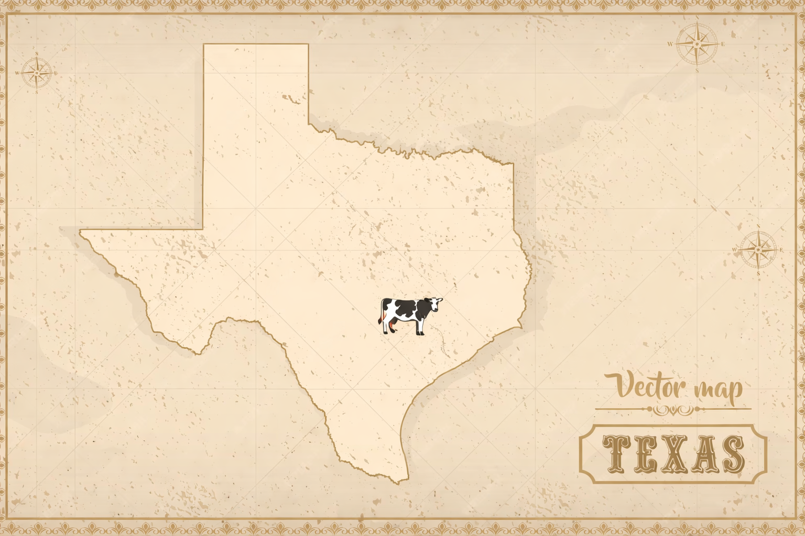

Animals, crops, irrigation, automation—hands-on from day one, no experience required.
Build for the future
Experiment with sensors, workflows, and systems that scale food production for what's coming.

The Opportunity
Land Is the Asset
Central Texas farmland is undervalued relative to coastal markets and positioned for appreciation as the region industrializes. We're acquiring land, water, and productive capacity—physical assets that hold value regardless of what happens in financial markets.
Land appreciationWater securityFood production
Future-Ready
Traditional Meets Automated
We're not LARPing the past. We're building what farming becomes.
Sensors
Soil moisture, water levels, animal tracking. Data where it matters.
Automation
Irrigation, feeding, monitoring. Reduce labor without losing quality.
Open Systems
Everything we build gets documented. Replicable by design.
Deep Dive
Why We're Building This
The full reasoning behind Solartopia—land, labor, and what comes next.
The Problem
Labor automation is coming. Competing with AI is a losing game. The answer is physical sovereignty: land, water, food, community.
The Solution
Acquire land now. Build productive capacity. Create high-trust communities that can weather what's coming—and thrive.
Solartopia is a land-based residency in Central Texas where young people (18-25) live together and build real self-sufficiency—not just growing food, but producing clothes, household goods, and daily essentials. We combine traditional craft knowledge with appropriate technology to create a life where your basic needs aren't dependent on systems outside your control.
Young adults aged 18-25 who want hands-on experience with land stewardship, food production, and making the things they use every day. We especially welcome AAPI and immigrant youth, though the program is open to anyone aligned with our mission. No farming or crafting experience required—just willingness to learn and contribute.
Residents participate in daily operations across the full spectrum of self-sufficiency: growing and processing food, raising animals, making clothes, producing soaps and household products, and maintaining shared living spaces. Beyond the hands-on work, residents also experiment with automation—building sensor systems, testing tools, and developing workflows that could scale production as robotics and AI advance. We're not just learning to live differently; we're designing what that life looks like in 10 years.
Our pilot cohort runs for 2 weeks. Future cohorts will range from 4 weeks to 3 months depending on the program track. We're building toward longer-term residency options as we establish our permanent site.
No program fees. When you're here, your basics are covered—food, housing, clothing, and daily essentials. You focus on learning and contributing, not worrying about survival. We're working toward offering stipends as our operations grow.
We're based in Central Texas, currently scouting for our permanent site in the region north of Austin. We chose Texas because it offers affordable land, multiple growing seasons, and a permissive regulatory environment for small-scale agriculture and production. Central Texas specifically has strong water access, proximity to urban markets in Austin and San Antonio, and an emerging community interested in food sovereignty and regenerative living.
We produce what we need to live: grass-fed beef, pasture-raised chicken, pork, and lamb raised on rotational pasture with room to forage naturally. Wild-caught seafood and grocery staples we'd actually eat ourselves. Clothing made on-site. Soaps, candles, and household products without industrial additives. No certifications for show—just real practices, tested products, and full transparency about how everything is made.
We're in the founding stage, which means there's room to shape what Solartopia becomes.
Join a pilot cohort: Sign up for our mailing list to get first access to our 2026 pilot gathering. This is the best way to experience the vision firsthand and become part of the founding community.
Become a Founding Solar Landlord: We're raising capital from aligned investors who believe land, water, and food production are the foundation of real wealth. Founding Solar Landlords invest in our land acquisition and infrastructure buildout—and share in the long-term appreciation of productive farmland in Central Texas. This isn't charity; it's an investment in physical assets that hold value regardless of what happens in financial markets.
Partner with us: If you have land leads, agricultural expertise, fabrication skills, or connections to food buyers, we want to talk. The early team is small and every contribution shapes the project.
Support the mission: We're establishing a nonprofit arm for education, food access programs, and youth training. Tax-deductible donations help us offer residencies without financial barriers.
Reach out directly if any of this resonates. We're building something real, and the people who show up early get to help decide what it becomes.